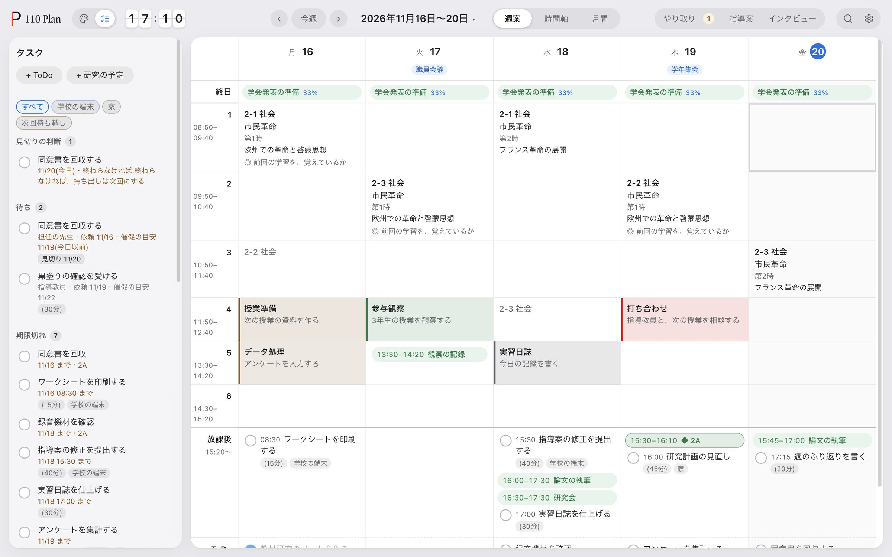
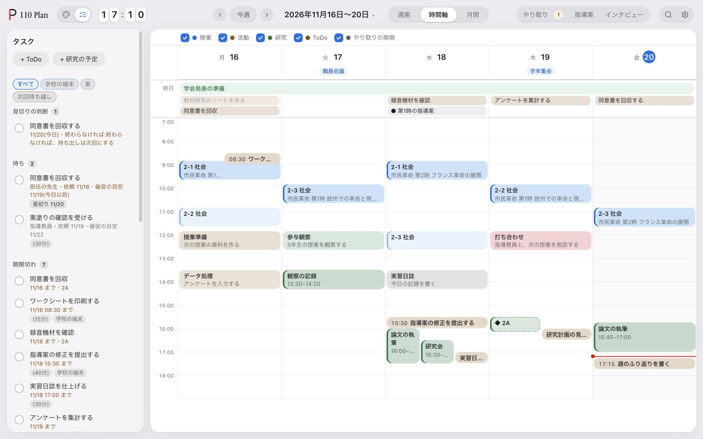
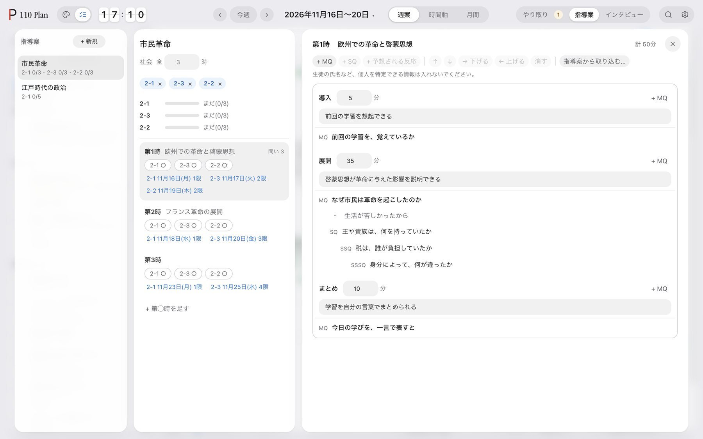
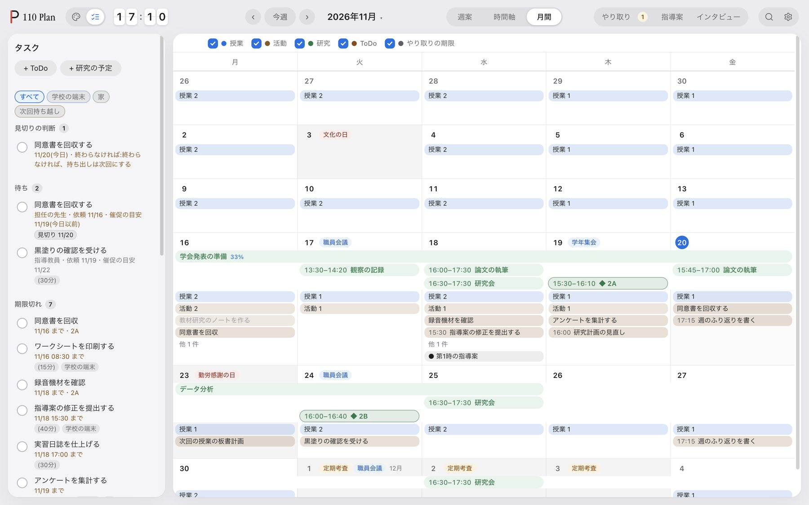

Stück 02 · まもなく完成
110 Plan
授業と仕事を一週間で見わたす。
授業と仕事の予定を、週案で見わたす手帳アプリ。指導案、インタビューの日程、相手とのやり取りまで、ひとつの手帳に。授業をする先生、現場で研究もする先生、実習生のために。

週案をいちばん見やすく。
一週間の授業・ToDo・研究の予定を、週の表と時間軸で重ねて見られます。月間と「この日」の画面にも切り替えられ、第◯時の名前もコマに出ます。2本指でなぞれば、となりの週へすっと移ります。
はじめて起動したときに、使い方(授業をする先生・研究もする先生・実習生)、校種、時間割の時刻、クラスを決めるだけで、すぐ自分の手帳になります。

Word の指導案をそのまま読み取る。
指導案の表から、導入・展開・まとめ、時間、評価、主発問・補助発問、予想される反応を読み分けて取り込みます。取り込む前にプレビューで直せます。
問いは MQ → SQ → SSQ と、いくらでも深くでき、ドラッグで順番も階層も動かせます。クラスごとに「済み」を付ければ、「1組は第3時まで」と進み具合の差も見えます。

インタビューの段取りも、同じ手帳で。
対象者を匿名のコードで登録し、「調整中 → 確定 → 実施済 → 文字起こし中 → 逐語録完了」と状態を進めていきます。日程が決まれば、カレンダーの「研究」の層にそのまま出ます。
- 準備の ToDo を自動でインタビューを登録すると、準備のやることが ToDo として並びます。
- 質問項目を構造でQ → SQ → SSQ と深められ、Word から取り込んだり、別のインタビューから写したりできます。
- その先へ逐語録づくりは 110 Note、分析は 110 QDA へ。
ボールがどちらにあるか、いつもわかる。
「やり取り」は、相手との連絡を件ごとに記録する機能です。本文は持たず、「自分の番/相手の番/完了」だけを動かします。ボタンひとつでボールが移り、その動きが記録に残ります。
自分の番のものは、タスクの一覧と「この日」の画面に並ぶので、返事の出し忘れを防げます。承認待ち・修正中などのタグで絞り込むこともできます。
画面

できること
週・時間軸・月間・この日
同じ予定を、目的に合わせた4つの見え方で。
スモールステップ
大きな予定を細かな段に分けると、済んだ割合が進捗(%)になります。
まとめて探す
ToDo・やり取り・インタビュー・指導案・行事を、⌘F ひとつで横断して検索。
時程と行事
短縮日課や行事、祝日・休校日も。授業のない日は時間割を出しません。
手触りのある動き
パタパタ時計、ばねのように弾む ToDo の完了、指に付いてくる週の切り替え。
バックアップ
自動バックアップと、控えからの復元。
あなたのパソコンの中だけで。
インターネットには一切つながりません。データは、このパソコンの中だけに保存されます。
- PlatformMac / Windows
- Network通信しません